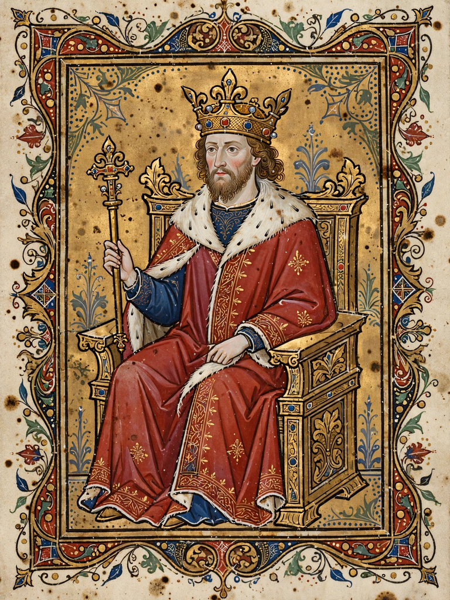

From Wikipedia, the free encyclopedia
| Charles the Simple | |
| Reign | King of West Francia: 898 – 922 King of Lotharingia: 911 – 923 |
|---|---|
| Born | 17 September 879 |
| Died | 7 October 929 (aged 50) Péronne |
| Dynasty | Carolingian |
| Father | Louis the Stammerer |
| Mother | Adelaide of Paris |
| Spouses | Frederuna; Eadgifu of Wessex |
Charles III (17 September 879 – 7 October 929), known as Charles the Simple, was the king of West Francia from 898 until 922 and the king of Lotharingia from 911 until 923. A posthumous son of Louis the Stammerer, he was a member of the Carolingian dynasty. His epithet "the Simple" (Simplex) meant "straightforward" or "forthright" rather than foolish, reflecting his plain dealing.

Charles was crowned as a rival king at Reims in 893, while still a boy, by supporters opposed to King Odo; he became sole king on Odo's death in 898. His reign was dominated by Viking raids and the growing power of the great magnates. In 911, by the Treaty of Saint-Clair-sur-Epte, Charles granted the Viking leader Rollo lands around Rouen at the mouth of the Seine in return for protection against other raiders — the origin of the Duchy of Normandy. In the same year the Lotharingian nobility accepted him as king, briefly reuniting Lotharingia with the West Frankish kingdom.
Charles's reliance on his low-born favourite Hagano alienated the aristocracy. In 922 the magnates rebelled and crowned Robert I, count of Paris. Charles defeated and killed Robert at the Battle of Soissons in 923 but was himself captured by Herbert II of Vermandois and imprisoned, first at Château-Thierry and then at Péronne, where he died in 929. His son by Eadgifu of Wessex, Louis — raised in England — returned in 936 to reign as Louis IV "from Overseas."
See also: Treaty of Saint-Clair-sur-Epte · Duchy of Normandy · Carolingian dynasty · West Francia